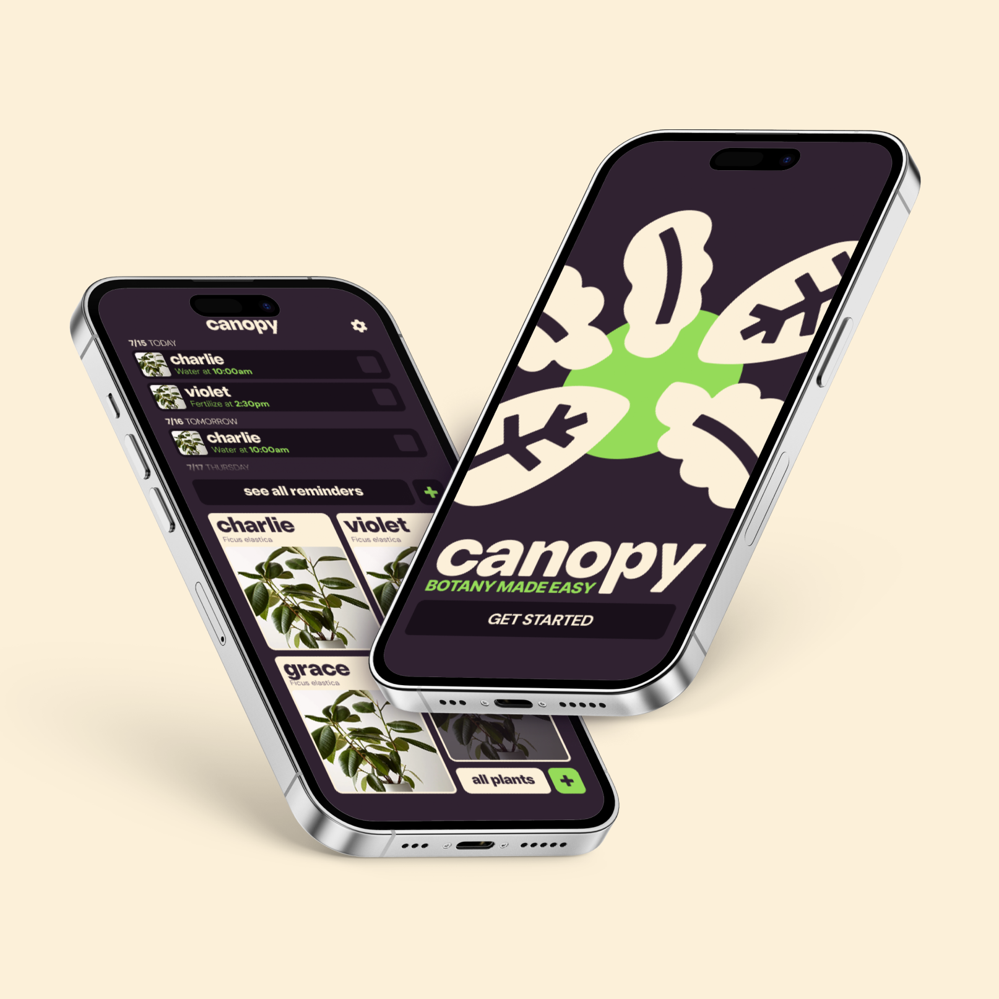

Complete brand identity design including logo, color palette, and typography for a tech startup.
I have always loved nature, but I often found myself overwhelmed by the details of plant care. Each species seems to come with its own rules; how often to water, how much sunlight is enough, when to re-fertilize, and how to recognize when something is wrong. All of these factors deterred me from getting some I would just eventually kill, despite my desire to grow plants myself. This personal struggle led me to create Canopy. As a plant lover and designer, I wanted to create something that would make caring for plants feel less intimidating and more inviting. Canopy is an app designed to help people bring more nature into their daily lives by simplifying the process of plant care. With Canopy, users can take a picture of any plant and receive instant identification along with tailored care instructions. Beyond just information, the app encourages an ongoing relationship between the user and their plants: plants can be saved to a personal collection, their growth tracked over time, and their health checked if something seems off. Users can also add notes, set reminders for watering or fertilizing, and build a personalized record of their plants.
I wanted to design a tool that transforms plant care from something stressful into something approachable, rewarding, and even joyful. By lowering the barrier to entry, Canopy not only supports those who already enjoy plants but also invites new people to experience the benefits of caring for living things in their own spaces. My hope is that Canopy encourages users to see plants not just as decorations, but as living companions that enrich our environments, connect us to nature, and remind us to slow down and nurture growth in small, meaningful ways.